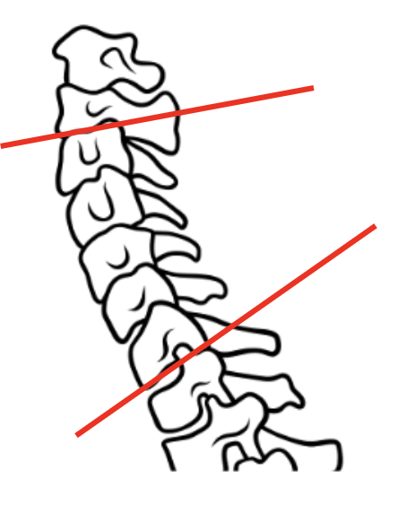
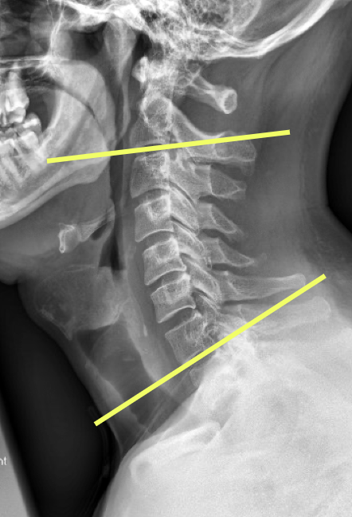
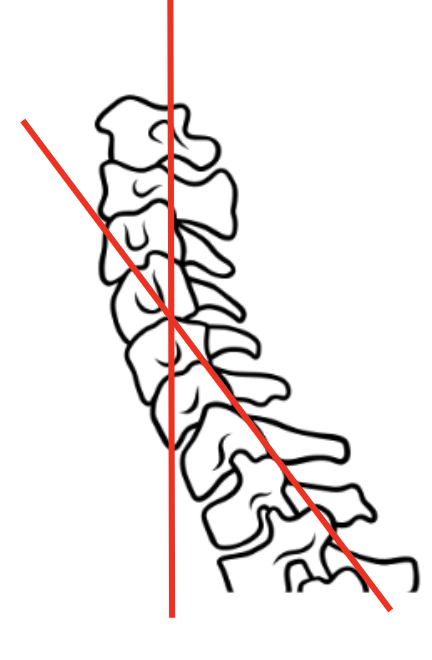
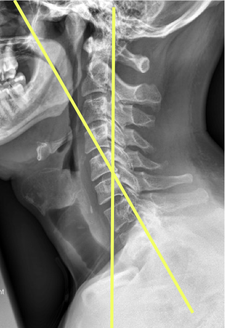

Cobb Method


Posterior Tangent/Harrison Method


1) Description of Measurement
Cervical lordosis refers to the natural inward curve of the cervical spine, typically assessed between the second (C2) and seventh (C7) cervical vertebrae. This curvature is essential for head posture, spinal balance, and normal neck biomechanics. Abnormal lordosis can be associated with neck pain, degenerative changes, or post-surgical alignment concerns.
2) Instructions to Measure
Method 1 (endplates/ Cobb Method)
Use a neutral lateral cervical spine X-ray.
Identify the inferior endplate of C2 and the inferior endplate of C7.
Draw a line along each endplate.
Then, draw perpendicular lines from both of these endplate lines.
Measure the angle formed at the intersection of the two perpendiculars.
This angle is the C2–C7 Cobb angle, representing cervical lordosis.
Method 2 (posterior tangent method/ Harrison method)
On a neutral lateral cervical X-ray, draw a line along the posterior border of the vertebral body of C2.
Draw a second line along the posterior border of the vertebral body of C7.
Extend these lines until they intersect.
The angle between them is recorded as the posterior tangent angle, which represents cervical lordosis.
This method is called the "posterior tangent method" or Harrison method. Some studies suggest it may be more sensitive to subtle curvature changes, especially in the mid-cervical region. It may yield slightly different values than the Cobb method—so always document which technique you're using for consistency and comparison.
3) Normal vs. Pathologic Ranges
4) Important References
Virk S, Lafage R, Elysee J, Louie P, Kim HJ, Albert T, Lenke LG, Schwab F, Lafage V. The 3 sagittal morphotypes that define the normal cervical spine: a systematic review of the literature and an analysis of asymptomatic volunteers. JBJS. 2020 Oct 7;102(19):e109.
Guo GM, Li J, Diao QX, Zhu TH, Song ZX, Guo YY, Gao YZ. Cervical lordosis in asymptomatic individuals: a meta-analysis. Journal of orthopaedic surgery and research. 2018 Jun 15;13(1):147.
Been E, Shefi S, Soudack M. Cervical lordosis: the effect of age and gender. The Spine Journal. 2017 Jun 1;17(6):880-8.
5) Other info....
A wide range of C2–C7 alignment can be normal depending on individual anatomy. Always document your measurement method, and consider T1 slope and overall sagittal alignment when interpreting these values.
Cobb and posterior tangent methods yield different values. Always specify which was used.